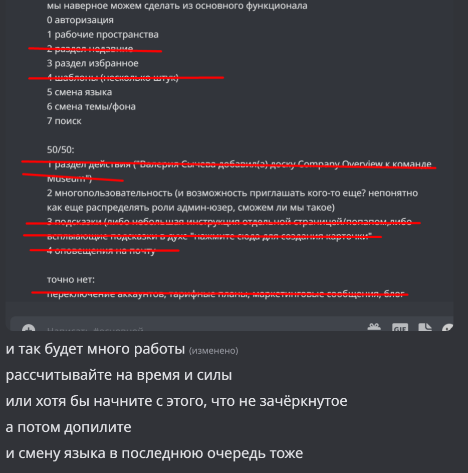

Организация работыПервоначальный план с резолюцией ментора

RACI матрица
LinkTrello
LinkGitHub Issues
Link
Сложности
Особенности технической реализации проекта и его репозиторийИспользованные библиотеки, фреймворки и технологии
ReadmeИстория коммитов